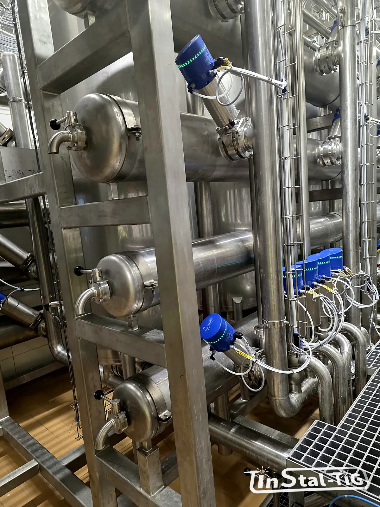

Odbiór instalacji: dokumentacja, próby ciśnieniowe, protokoły spoin

Instalacja zmontowana, spoiny wyglądają dobrze, linia czeka na uruchomienie. Zanim podpiszecie protokół odbioru, warto wiedzieć, co sprawdzić i jakie dokumenty powinny zostać w zakładzie. Za kilka lat, przy audycie, awarii albo rozbudowie, to one powiedzą, z czego i jak instalacja została zrobiona.
Ustalcie to przed zamówieniem
Zakres dokumentacji i badań warto zapisać już w zapytaniu ofertowym i w umowie. Każde badanie i każdy protokół to czas i koszt, więc wykonawca musi wiedzieć o nich od początku. Pisaliśmy o tym w poradniku jak przygotować zapytanie ofertowe.
Jeśli instalacja podlega dozorowi technicznemu albo przepisom o urządzeniach ciśnieniowych, wymagania co do badań i dokumentów wynikają wprost z przepisów i ustala się je na etapie projektu.
Dokumenty materiałowe
- Świadectwa odbioru materiałów według PN-EN 10204. Dla rur, kształtek i blach najczęściej wymaga się świadectwa typu 3.1: wyniki badań konkretnej partii, potwierdzone przez przedstawiciela producenta niezależnego od produkcji. Świadectwo 2.2 zawiera tylko typowe wyniki, niekoniecznie z tej partii.
- Identyfikowalność: możliwość powiązania rury czy kształtki w instalacji z jej świadectwem, np. przez numer wytopu.
- Dokumenty materiałów do kontaktu z żywnością (uszczelki, armatura), zgodne z przepisami dla takich materiałów, m.in. rozporządzeniem (WE) nr 1935/2004.
Dokumenty spawalnicze
- WPS, czyli instrukcja technologiczna spawania: z jakimi parametrami, gazami i materiałem dodatkowym wykonano spoiny.
- WPQR, czyli protokół uznania tej technologii (np. według PN-EN ISO 15614-1), gdy jest wymagany.
- Uprawnienia spawaczy według PN-EN ISO 9606-1 i operatorów urządzeń zmechanizowanych, np. orbitalnych, według PN-EN ISO 14732 (o spawaniu orbitalnym piszemy w artykule orbitalne czy ręczne TIG?).
- Mapa spoin: rysunek lub lista z numerem każdej spoiny, tym, kto ją wykonał, i wynikiem kontroli. W instalacjach higienicznych i farmaceutycznych to często standard.
Kontrola spoin
- Badanie wizualne (VT) to podstawa. Kryteria oceny określa zwykle norma PN-EN ISO 5817 przez poziom jakości (B, C lub D), który warto wskazać w zamówieniu.
- Wnętrze rury: w instalacjach higienicznych liczy się grań. Ogląda się ją endoskopem albo na próbkach spoin. Grań powinna być pełna, równa i bez mocnych przebarwień (więcej w artykule o formowaniu grani).
- Badania dodatkowe, np. penetracyjne, radiograficzne lub ultradźwiękowe, wykonuje się, gdy wymagają tego przepisy, projekt albo zamawiający, zwykle na określonym procencie spoin.
Próba ciśnieniowa
Próba szczelności i wytrzymałości to obowiązkowy punkt większości odbiorów. Kilka rzeczy, o których warto pamiętać:
- Ciśnienie i czas próby określa projekt albo przepisy, którym podlega instalacja. Ciśnienie próby jest wyższe od ciśnienia roboczego.
- Próba wodna (hydrauliczna) jest bezpieczniejsza od pneumatycznej, bo woda prawie się nie ściska i nie gromadzi tyle energii co sprężone powietrze. Próbę gazem stosuje się wtedy, gdy wody użyć nie można, i z dodatkowymi środkami ostrożności.
- Woda do próby instalacji nierdzewnej powinna mieć niską zawartość chlorków, a po próbie trzeba ją spuścić i nie zostawiać jej w rurach na długo. Stojąca woda z chlorkami to prosta droga do wżerów (o korozji piszemy w tekście skąd się bierze rdza na nierdzewce).
- Protokół próby zawiera m.in. odcinek instalacji, ciśnienie, czas, medium próby, wynik oraz podpisy wykonawcy i zamawiającego.
Powierzchnia, czystość i układ instalacji
- potwierdzenie trawienia i pasywacji, jeśli były w zakresie (kiedy są konieczne),
- pomiary chropowatości, jeśli wymagano np. Ra ≤ 0,8 µm (jak się je robi),
- płukanie i czyszczenie instalacji przed pierwszym kontaktem z produktem,
- sprawdzenie spadków i opróżnialności oraz tego, czy nie powstały martwe strefy (zasada 3D),
- sprawdzenie podpór: punktów stałych i przesuwnych (konstrukcje wsporcze).
Warto wiedzieć: dokumentacja powykonawcza to nie tylko formalność. Rysunki zgodne z tym, co faktycznie zbudowano, oraz lista materiałów i armatury bardzo ułatwiają późniejsze przeróbki, części zamienne i audyty bezpieczeństwa żywności.
Lista kontrolna odbioru
- świadectwa materiałowe (zwykle 3.1) i identyfikowalność,
- dokumenty materiałów do kontaktu z żywnością,
- WPS, WPQR i uprawnienia spawaczy,
- mapa spoin i protokoły kontroli spoin,
- protokół próby ciśnieniowej,
- protokoły trawienia i pasywacji oraz pomiarów chropowatości, jeśli były wymagane,
- rysunki powykonawcze i lista armatury,
- protokół odbioru z listą ewentualnych usterek i terminem ich usunięcia.
Jeśli planujesz instalację i chcesz od razu ustalić zakres dokumentacji, napisz o tym w formularzu Wycena online.
Chcesz od początku ustalić zakres odbioru?
Zadzwoń albo napisz. Powiedz, jakich dokumentów i badań potrzebujecie przy odbiorze, a uwzględnimy je w wycenie.
Zadzwoń: 667 466 431 Napisz e-mail Wycena online